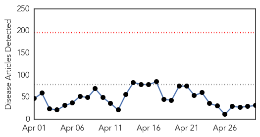
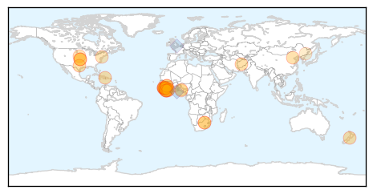
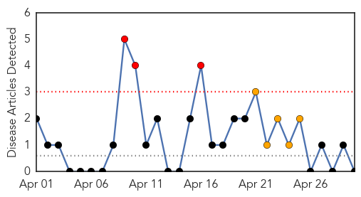

Ebola
30-Day Web Trend
0 alerts, 0 warnings

30-Day Twitter Trend
0 alerts, 0 warnings

Article Locations
Article Confidences

Top Articles:
- 1.000
- New UN special envoy on Ebola response visit to Sierra Leone
- 1.000
- Communicating in a crisis like Ebola: Facts and figures
- 1.000
- Ghana, Business Advice, Jobs, News, Business Directory, Real Estate, Finance, Forms, Auto
- 0.999
- ENDING EBOLA BEFORE RAINY SEASON IMPERATIVE SAYS NEW ACTING HEAD OF UNMEER
- 0.999
- Ebola Survivors Fight Stigma
- 0.998
- MOH officer to help fight Ebola in West Africa
- 0.998
- Health Ministry to send public health officer to Sierra Leone to help with Ebola efforts, Health News & Top Stories
- 0.997
- UN says ending Ebola before rainy season imperative
- 0.997
- Mound City NorthStar
- 0.994
- Experts call for vigilance, sustained measures against Ebola
- 0.992
- Liberia closes US-built Ebola unit
- 0.983
- Monrovia Medical Unit Decommissioned; President Sirleaf Thanked the U.S. Public Health Service (USHPS) Commission Corps for their Services to Liberia
- 0.981
- Liberia Burials Key in Ebola Fight
- 0.977
- Remember Ebola? It Could Soon Be Declared Gone From Liberia
- 0.957
- UNESCO, Chinese school tech fund helps Liberia recover from Ebola
- 0.957
- UNESCO, Chinese school tech fund helps Liberia recover from Ebola
- 0.916
- Salone, Guinea record 33 ebola cases last week « Awoko Newspaper
- 0.897
- Guinea: Help for 150 families affected by Ebola
- 0.867
- Caring for Patients With Ebola Virus in the Nebraska Biocontainment Unit
- 0.860
- Schools in rural Liberia face drinking water shortages - Xinhua
- 0.858
- Schools in rural Liberia face drinking water shortages
- 0.854
- As Pa. tops list of Lyme disease cases, senator urges awareness
- 0.825
- Guinea: Vaccination teams defeat 'Ebola effect' in Guinea
- 0.815
- Methanol poisoning deaths in Ondo State
- 0.811
- Sierra Leone: Promoting health at the heart of the communities - Sierra Leone
- 0.743
- Africa News Network 24x7
- 0.661
- Resumption of the DOLF NTD Project in Lofa County, Liberia Following the Ebola Epidemic The DOLF Project (Death to Oncho and LF)
- 0.657
- When Science Confronts Tradition, Articles
- 0.606
- Chinese CDC trains Surveillance officers in Information Technology « Awoko Newspaper
- 0.576
- Health Workers Differ with NHWAL Leadership on Dahn’s Confirmation
- 0.522
- General Board of Global Ministries
Top Tweets:
- 0.977
- There's a health crisis in West Africa – and it's not Ebola - New Internationalist (blog) http://t.co/lIdqbvj2ep ebola EVD
- 0.960
- Sierra Leone: Back to class after the Ebola outbreak - http://t.co/nXaOGJNqpR http://t.co/cHbKMDB4j6 ebola EVD
- 0.906
- Where Ebola Still Lives - New York Observer http://t.co/4XKkzEwWJ8 ebola EVD
- 0.902
- Ebola victim's fiancée recounts 'heartbreaking' loss - WFAA http://t.co/m5KHeXdBIC ebola EVD
- 0.902
- Ebola victim's fiancée recounts 'heartbreaking' loss - WFAA http://t.co/4bs2RKE30v ebola EVD
- 0.894
- Liberia Burials Key in Ebola Fight - Voice of America http://t.co/3yujMGuCwr ebola EVD
- 0.879
- Entraînez-vous à répéter la chanson Africa Stop Ebola pour les castings qui auront lieu à l’espace Bluezone de... http://t.co/pgUE29HUN4
- 0.868
- SierraLeone: Back to class after the Ebola outbreak back2schools http://t.co/zXl67vmtEg
- 0.865
- Reviving agriculturalproduction in areas affected by the Ebola outbreak in Guinea http://t.co/1Ts5cuKzyU
- 0.856
- What Obama Still Hasn't Learned From Ebola Crisis - Daily Signal http://t.co/NSkWiLdidA ebola EVD
- 0.847
- What happens to Ebola Treatment Units when there are no more Ebola cases? http://t.co/9bOrWq7Q1l EbolaResponse
- 0.828
- Preparing for Ebola in West Africa not yet affected: perspectives from Ghanaian health prof http://t.co/y8aGi0GmCq
- 0.809
- Singapore sends Public Health Officer to participate in WHO Ebola efforts - Channel News Asia http://t.co/YrcW3VgqE7 ebola EVD
- 0.798
- US shuts down Ebola treatment center in Liberia as country counts down to ... - U.S. News & World Report http://t.co/0046EBPSds ebola EVD
- 0.793
- Deadly Infectious Diseases such as Ebola: the parachute paradigm (or "why an RCT is not the right tool for Ebola") http://t.co/nvXE5Pvce9
- 0.685
- Host of Ailments Plague African Ebola Survivors - Wall Street Journal http://t.co/SZmXZXsch6 ebola EVD
- 0.675
- U.N. Health Agency hopes to limit transmission of Ebola to coastal areas of West Africa before rainy season begins http://t.co/swNFLJZHBh
- 0.670
- Remember Ebola? It Could Soon Be Declared Gone From Liberia - Huffington Post http://t.co/xQUyQAFcfq ebola EVD
- 0.629
- Sierra Leone: Multi-Sector Assessment, April 2015 ebola http://t.co/nAuqUv5Npi
- 0.612
- Vaccination teams defeat 'Ebola effect' in Guinea https://t.co/hP28k0DHUD via
- 0.575
- Ebola: Liberia introduces WASHprotocol in schools back2school http://t.co/6lILTD79Ro via
- 0.507
- Slow Ebola progress in affected nations shows need for response tweaks http://t.co/RA1ZuSFQvT
West Nile Virus
30-Day Web Trend
3 alerts, 5 warnings

30-Day Twitter Trend
0 alerts, 0 warnings

Article Locations

Article Confidences

Top Articles:
-
No articles found for Apr 30, 2015
Top Tweets:
-
No tweets found for Apr 30, 2015